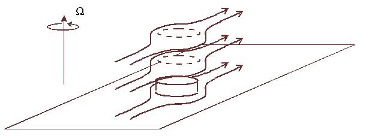
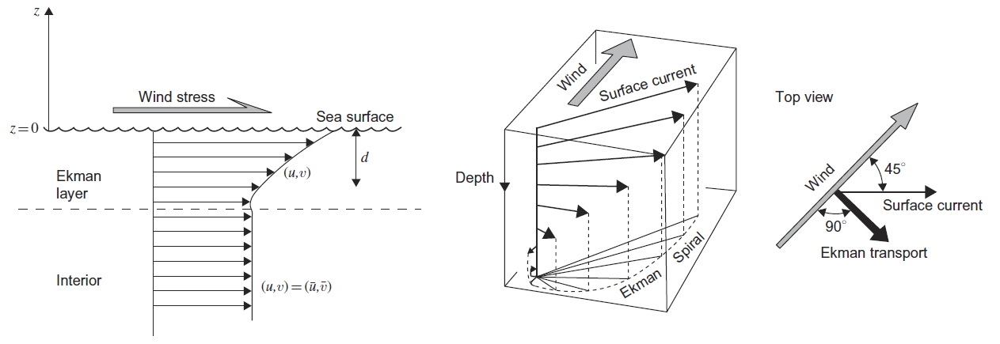

40. Geophysical phenomena¶
In this section:
How do mountains and ocean floor topography affect fluid circulation high above?
What is the famous “tea leaf paradox” and how do we explain it?
What are ocean gyres, and how do they form?
40.1. Uniform rotation¶
In Section 39.3, the Navier-Stokes equations were presented relative to a rotating frame of reference. The rotating bucket problem seen in Exercise 33.3 can be tackled using these equations.
We consider a general particle at position \(\underline{x}=(x,y,z)\). The particle has zero velocity relative to the rotating frame, which has angular velocity \(\underline{\Omega}=(0,0,\Omega)\). Equation (39.13) then becomes
We see that the centrifugal acceleration is balanced by a radial pressure gradient so that the streamlines remain circular. For the centrifugal term we obtain
Integrating equation (40.1) gives the same result obtained in Exercise 33.3. The pressure gradient varies linearly in the radial direction:
40.2. Almost uniform rotation¶
We now consider the case of a body of fluid that undergoes weak motion relative to a frame rotating at constant angular velocity \(\underline{\Omega}.\) Taking \(U\) and \(L\) to be characteristic length and velocity scales of the motion allows us to compare the size of the inertial term relative to the Coriolis term:
If this ratio is much smaller than one then the inertial term can be neglected to a first approximation. We will also suppose that viscous effects may be neglected in the interior of the fluid (i.e. away from any boundaries), and we will look for steady solutions. The equations of motion then simplify to
where \(p_R\) denotes the reduced pressure. The prevailing winds \(\underline{u}\) are due to a balance between the Coriolis force and pressure, known as geostrophic balance.
Taking the angular velocity to be \(\underline{\Omega}=(0,0,\Omega)\) and denoting the velocity by \(\underline{u}=(u,v,w)\) gives the following scalar (component) form:
Integrating the vertical component of the momentum equation and then substituting the result into each of the other three expressions shows that \(\underline{u}=(u,v,w)\) is fully independent of \(z\) so that the fluid motion is effectively two-dimensional. This result is called the Taylor-Proudman theorem.
An interesting consequence of this result can occur when the flow encounters an obstacle such as a bump at the bottom of the fluid. The effects of viscosity are confined to a narrow layer attached to the obstacle surface, called an Ekman boundary layer. Above that, the fluid forms a column above the obstacle, which is stationary with respect to the rotating frame. Fluid in the inviscid main part of the flow cannot pass through this column and is deflected around the obstacle at all heights, as shown in the below diagram. The diagram is taken from p118 of [MP08], which is available in digitised form from UCL library.

{kind=link}
This explains how mountains can affect the patterns of atmospheric flow at very great altitudes above the top of the mountains, and how contours of the ocean floor affect oceanographic flows.
40.3. Ekman boundary layer¶
In the analysis of the last section, viscous effects were neglected. However, these effects are important near to a boundary.
In the rotating bucket problem, fluid at the bottom of the vessel adheres to the boundary due to friction. This creates a region, called a boundary layer where the velocity gradient changes sharply, as illustrated in the image below. Within the boundary layer, viscous effects cannot be neglected.

It is assumed that the boundary layer is very thin, and that within this region the velocity depends much more strongly on \(z\) than either of \(x,y\). Gravitational effects can be neglected. The viscous equations of motion therefore reduce to
By solving these equations and matching the solution to the inviscid profile found in the inner fluid layer, it can be deduced that the boundary layer thickness scales as
The kinematic viscosity of water is approximately \(10^{-6}\mathrm{ms}^{-1}\). Therefore for a cup of water rotating at \(1\mathrm{rad/s}\) the Ekman layer thickness is estimated to be around 1mm.
40.4. Unsteady secondary effects¶
The slowdown of the flow due to viscous effects in the Ekman layer means that the centrifugal force is no longer sufficient to balance the pressure gradient and so there is a net pressure towards the centre. The pressure gradient creates an unsteady (time-dependent) secondary flow that suctions fluid from the outer radius of the Ekman layer and pumps it up from the centre into the inviscid main body, creating a circulation effect as shown in the diagram below, taken from [KCD05].
This explains the so-called “tea leaf paradox” in which tea-leaves are observed to settle at the centre of a stirred cup rather than migrating to the edges. Leaves either descend by gravity or they are transported by centrifugal acceleration to towards the sidewall and driven down into the Ekman layer. Within the boundary layer they are swept to the centre and then dropped as fluid is pumped back into the inviscid layer.
{kind=link}
The continual pumping action of fluid from the inviscid main body into the viscous boundary also means that viscous effects become apparent on a much shorter timescale than would be expected due to viscous diffusion alone. By dimensional analysis, the timescales for viscous diffusion and Ekman pumping are found to be
where \(L\) is a characteristic lengtscale of the motion. For a teacup the viscous diffusion timescale gives a spindown time of about an hour, whilst the Ekman diffusion timescale is about a minute.
40.5. Oceanography¶
Ekman layers occur in the ocean. For the rotating teacup we were most concerned with the boundary layer that forms at the bottom of the cup, but in the ocean it is often the surface layer that we are more interested in. Strong planar winds at the ocean surface can create a shear current in the upper ocean. In combination with the Coriolis acceleration, this creates a spiral flow in the Ekman layer, as shown in the below images from [CRB11].

{kind=link}
This can lead to the formation of circulating currents called ocean gyres. Secondary circulation effects can also cause upwelling or downwelling to occur, and these effects may be particularly important near to landmasses, where upwelling can bring nutrient rich water to the ocean surface, as described in this video.
Estimates using the earth’s rotation rate and the molecular viscosity of water lead to Ekman thickness estimates of around 10cm. However, observational data shows that Ekman layers can have a thickness of tens of metres. This is because turbulent mixing in the ocean affects shear stress in a similar way to viscosity, resulting in an effective viscosity some 1000 times greater.
Exercise 40.1
Read Chapter 3 (pp27-44) of Threats to the Arctic. Write a 200 word summary explaining what the Beaufort Gyre (BG) is and how it affects the freshwater composition of the Atlantic. What do you think would happen if the Arctic Ocean became a low pressure system due to the rising of warm air?
Hint: The BG is driven by Northern Hemisphere anticyclonic (clockwise) winds. Due to the Corilolis force, the net Ekman transport is to the right of the wind direction, i.e. towards the centre of the gyre. This results in downwelling at the centre of the gyre.
{kind=link}
image: [CRB11]
40.6. References¶
- CRB11(1,2)
Benoit Cushman-Roisin and Jean-Marie Beckers. Introduction to Geophysical Fluid Dynamics: Physical and Numerical Aspects. Elsevier, 2011.
- KCD05
Pijush K. Kundru, Ira M. Cohen, and David R. Dowling. Fluid Mechanics (Fifth Edition). Elsevier, 2005.
- MP08
John Marshall and R. Alan Plumb. Atmosphere, Ocean and Climate Dynamics. International Geophysics Ser. ; 93. Web., 2008.